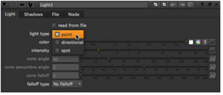
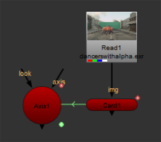
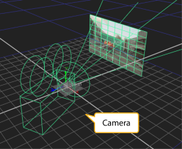
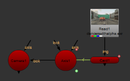
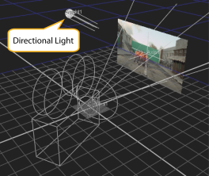
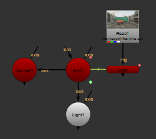
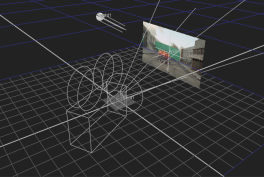
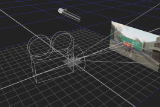

灯光节点包括 DirectLight 、 Point 和 Spotlight 节点，因此您可以将其设置为充当这三个节点中的任何一个。以这种方式使用灯光节点的好处是，如果你想以后改变灯光类型，你可以在不设置新节点的情况下这样做。例如，你可能会插入一个直射灯，但然后意识到你真正需要的是一个聚光灯。如果使用 DirectLight 节点插入直射灯光，则需要删除此节点并插入聚光灯节点。但是，如果使用灯光节点插入直射灯光，则可以简单地更改灯光 类型 从 定向 到 现货 在灯光控制中。
提示: 该节点还可以用于从 。Fbx 文件。这是描述下 从 FBX 文件导入灯光 .
| 1。 | 选择 3D > 灯光 > 光 将灯光节点插入脚本。 |
| 2. | 在灯光控制中，选择 轻型类型 你想使用: 点 , 定向 ,或 现货 。将根据您选择的灯光类型启用和禁用控件。例如，如果选择了平行光，则会获得与 DirectLight 节点上显示的控件相同的控件。 |

| 3. | 根据需要调整控件。有关控件功能的信息，请参阅以下内容: |
• 如果选择 “点” 作为灯光类型，请参见 插入点光源 .
• 如果选择 “方向” 作为灯光类型，请参见 插入直接灯 .
• 如果选择 “光点” 作为光源类型，请参见 插入聚光灯 .
您可以使用可选的 看 光节点的输入，以便光自动朝连接的输入旋转。可以将相机、灯光或轴节点附加到 看 输入。例如，可以将轴节点连接到 看 输入，使光线旋转，面向轴，无论它被移动。
如果设置卡片的动画以沿 x 轴移动，则可以使用 看 输入，以便它们在卡移动时自动旋转并面对卡。为此，请完成以下步骤:
| 1。 | 动画你的卡后，插入一个轴节点。 |
| 2. | 表达式通过保持将轴节点链接到卡节点 Ctrl ,单击 翻译 卡节点的属性中的动画按钮，并将其拖动到 翻译 轴节点属性中的动画按钮。表达式链接显示为绿色线，箭头表示表达式的方向。请参阅 链接表达式 欲了解更多信息。 |

| 3. | 插入相机节点，然后将相机拖到查看器中所需的位置，或者使用相机节点属性来调整相机的位置。 |

| 4. | 连接相机的 看 输入到轴节点。 |

| 5. | 插入灯光节点并将灯光拖动到查看器中的所需位置，或使用灯光节点属性调整相机的位置。 |

| 6. | 连接灯光节点的 看 轴节点的输入 |

| 7. | 播放您的动画卡，并注意到相机和灯光跟随动画卡。 |
|  |  |
|
|